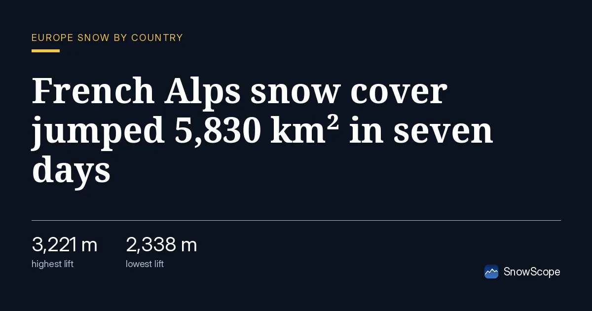
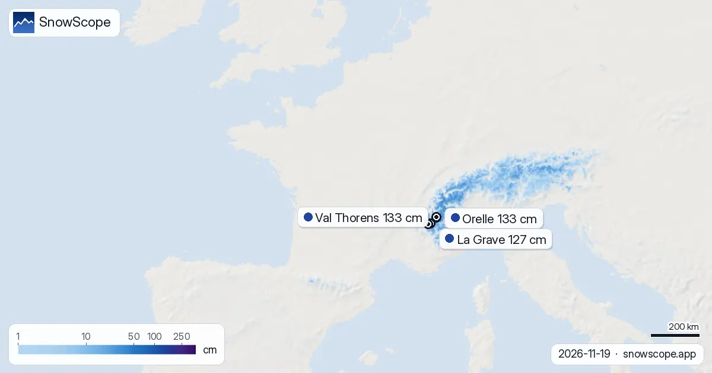

French Alps snow cover jumped 5,830 km² in seven days
Val Thorens and Orelle now hold 133 cm of snow at their highest points, more than three times the typical depth for mid-November. This jump follows a dramatic week in which France's total snow cover nearly doubled, from 6,040 km² seven days ago to 11,870 km² today.
See the live snow forecast for Orelle in the SnowScope appSnow depth, powder alerts and the 3D map, free.
One week, 5,830 km² of new white
The satellite data tells a clear story. On November 12, snow covered 6,040 km² of French terrain. Today it covers 11,870 km². That 5,830 km² gain in seven days is not typical for November, and it explains why the French Alps are suddenly so relevant for early-season skiers.
What drove this shift? A sequence of snow systems that favoured the high peaks. The Mont Blanc massif saw 240 cm of new snow in the past 72 hours alone. The northern French Alps received 130 cm in the same period, and even the southern ranges accumulated 105 cm. These are not model estimates for a region; these are the actual depth increases our snow model tracked across defined areas.
| Day | White area | Most new snow in 3 days | Deepest resort |
|---|---|---|---|
| Monday 16 November | 9,450 km² | 29 cm | Les Arcs |
| Tuesday 17 November | 8,670 km² | 45 cm | La Grave |
| Wednesday 18 November | 8,560 km² | 54 cm | Orelle |
| Thursday 19 November | 11,870 km² | 71 cm | Orelle |

Leadership concentrated at altitude
Orelle leads France with 133 cm measured at its upper station, having picked up 123 cm in three days. Val Thorens matches that figure. La Grave holds 127 cm after absorbing 116 cm in 72 hours. These are the outliers, and they sit high: Orelle and Val Thorens reach 3,221 m, La Grave touches 3,543 m.
Lower resorts tell a different story. Alpe d'Huez Grand Domaine has 90 cm at 3,306 m, while Les Deux Alpes holds just 102 cm at 3,511 m, despite sitting higher. The pattern is clear: the heaviest snow fell on the highest peaks, and it fell concentrated in the northern and central ranges.

Snow line still dropping
Our model places the current snow line at 1,800 m across France. Below that, cover is sparse. Between 1,500 and 2,000 m, only 46 percent of the terrain is white, with a mean depth of just 4 cm. At mid-range elevations (2,000 to 2,500 m), coverage jumps to 76 percent and depths average 13 cm.
Above 2,500 m, the picture transforms. Here, 96 percent of terrain is snow-covered and depths average 41 cm. This is where skiing will work first. The snow line may drop further as temperatures respond to the next system.
What fell in 72 hours
Yesterday's 24-hour total: up to 39 cm in the highest zones. Over three days, the maximum reached 71 cm. Our model tracks these accumulations across snow-mapped grid cells, so the numbers represent area means, not point measurements at a single weather station. For ski planning, the practical point is this: the depth increases have been substantial enough to change which elevations now have usable snow.
More snow is coming
The forecast for the next three days shows another 86 cm possible in the best zones; over seven days, 125 cm. November 22 looks like the heaviest single day, with up to 49 cm in high areas. This means the snow line will continue to lower, and even mid-range resorts may become skiable.
The second week (November 27 to December 3) stays active, though at a lower pace: 25 cm expected rather than 125 cm. By early December, if these forecasts hold, France will have shifted from marginal early-season conditions to something more robust.
Context: well above normal
Orelle's 133 cm is 23 percent above its typical mid-November depth of 108 cm. Val Thorens sits at 262 percent of normal for this date. These anomalies matter because they cut through the noise of early season—when thin snow and exposed rocks are always a hazard. Depth alone does not guarantee safe skiing, but it makes it likelier.
Thirteen percent of France's modelled area is now snow-covered (white share: 13%). That is low by winter standards, but it marks a sharp rise from last week. In one week, the covered fraction has more than doubled.
Tips for skiers
- Target elevations above 2,500 m for the most reliable snow. Below 1,800 m, ground hazards remain likely even after recent falls.
- Orelle, Val Thorens and La Grave are now the safest choices for depth. Les Deux Alpes and Alpe d'Huez have 90–102 cm but remain thinner.
- Expect significant new snow on November 20–22. Plan runs in areas already tracked and stable; check the official avalanche bulletin before any off-piste travel.
- Rocks and thin patches still exist above the snow line. The white cover only reaches 46 percent at 1,500–2,000 m, so stay on marked terrain in that band.
- Track the forecast daily. The seven-day outlook shows 125 cm possible, which would transform access further down the mountain by late next week.
About these numbers
Resort snow depths are the deepest snow on the resort's upper slopes from the SnowScope snow model (about 1 km, run of 19 November); they are estimates for an area, not a measurement at one point. Station values are measurements on the date shown. Forecasts can change. Always read the official avalanche bulletin before going off-piste.
Cite this report
For research, teaching or the press: the numbers and charts are free to reuse under CC BY 4.0 with this citation.
SnowScope (2026), French Alps snow cover jumped 5,830 km² in seven days, https://snowscope.app/blog/en/2026/11/france-snow-cover-gain-this-week-19-november-2026.html, accessed 2026-11-19
SnowScope (Atlas Labs). (2026, November 19). French Alps snow cover jumped 5,830 km² in seven days. SnowScope snow reports. https://snowscope.app/blog/en/2026/11/france-snow-cover-gain-this-week-19-november-2026.html
BibTeX
@misc{snowscope2026francesnowcovergainthisw,
author = {{SnowScope (Atlas Labs)}},
title = {French Alps snow cover jumped 5,830 km² in seven days},
year = {2026},
month = nov,
howpublished = {\url{https://snowscope.app/blog/en/2026/11/france-snow-cover-gain-this-week-19-november-2026.html}},
note = {Published 2026-11-19 12:19 UTC; accessed 2026-11-19}
}· CC BY 4.0 · Methods, data and tools →
Orelle: snow and temperature by height, this winter vs last (tools) →
Follow Orelle
Free: a message when fresh snow is coming, and the forecast every morning.
More snow reports

Les 2 Alpes reaches 3511 m for high snow in December 2026, with an adult 6-day pass priced at 266.50 EUR.

Orelle reached 31 cm by 16 November, up 17 cm in one week. The Alps are forecast to get up to 103 cm more snow by 19 November.

What is true about La Grave, the off-piste mountain under La Meije: terrain, safety, snow by month and the trend, from 46 past winters.